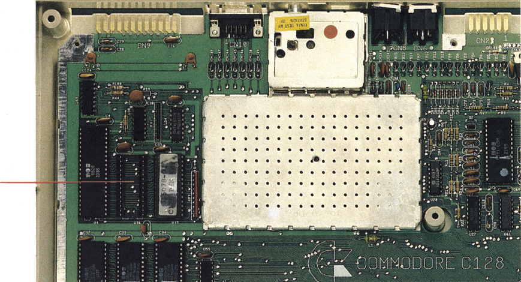
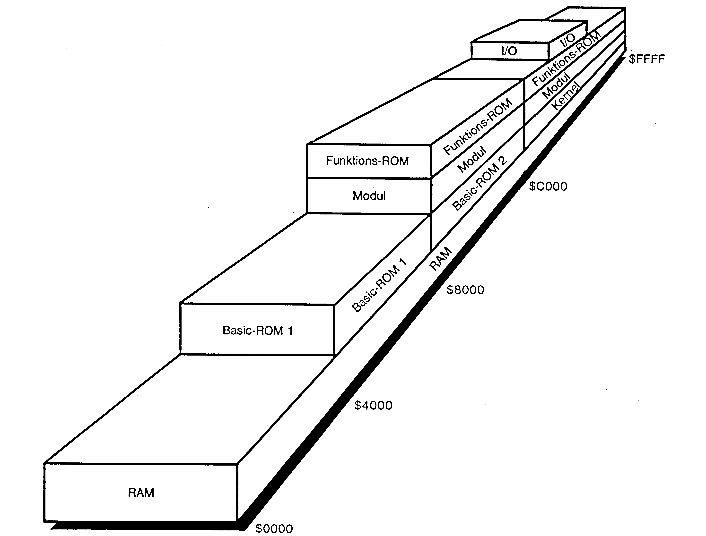

Der C 128 wächst...
Wenn Sie Ihren C 128 schon einmal geöffnet haben, dann wird Ihnen sicherlich der leere Sockel auf der Platine aufgefallen sein. Was man damit alles anfangen kann, sagt Ihnen der folgende Artikel.
Neben einer Vielzahl an Bausteinen enthält der C 128 auch einen Sockel, der beim Kauf des Geräts noch nicht belegt ist. Dieser freie Steckplatz eröffnet uns eine Vielzahl an Möglichkeiten. Schrauben Sie das Gehäuse Ihres C 128 auf (Vorsicht! Garantieverlust), dann erkennen Sie den leeren Sockel auf der linken Platinenseite neben dem ROM des C 128-Betriebssystems (Bild 1). Der Sockel trägt die Bezeichnung U 36 und ist für ein 16- oder 32 KByte EPROM (27128 oder 27256) vorgesehen.

Was kann man nun mit diesem Zusatz anfangen? Leider gibt es bisher so gut wie keine Information über die Beschaltung und das Ansprechen eines EPROMS in diesem Sockel, so daß wir für Sie einmal auf Entdeckungsreise gegangen sind.
Wie Sie sicherlich wissen, kann man sowohl in den C 64 als auch in den C 128 Erweiterungsmodule in einen dafür vorgesehenen Steckplatz auf der Rückseite des Computers stecken. Diese Buchse nennt sich Erweiterungs- oder Expansion-Port.
Der C 128 kann sowohl die Module eines C 64 als auch seine »eigenen« erkennen und schaltet dabei in den entsprechenden Modus. Die Module des C 64 werden dabei dadurch identifiziert, daß sie die EXROM- und die GAME-Leitung für ihre Zwecke verwenden. Sie schalten sich also hardwaremäßig ein.
Beim C 128 gingen die Entwickler einen anderen Weg. Hier kommt die MMU (»memory management unit« oder »Speicherverwaltungs-Einheit«) ins Spiel. Da der C 128 mehrere Speicherbänke zu je 64 KByte verwalten kann, muß zwischen den einzelnen Bänken auch umgeschaltet werden, um auf jedes Byte des Speichers zugreifen zu können.
Diese Umschaltung regelt die MMU, wobei auf Wunsch eine bestimmte Konfiguration des Speichers eingestellt werden kann. Dazu muß man wissen, daß der Speicher des C 128 in einen RAM-, einen unteren, einen mittleren und einen oberen Speicherbereich aufgeteilt ist. Dabei geht der untere Bereich von $4000 bis $7FFF, der mittlere von $8000 bis $BFFF und der obere von $C000 bis $FFFF. Der RAM-Bereich von $0000 bis $3FFF kann, wie der Name schon sagt, nur RAM enthalten. Die drei anderen Bereiche könnnen jedoch wahlweise mit einer bestimmten Belegung versehen werden (Bild 2).

Wir wollen die Ausführungen an dieser Stelle zwar so knapp wie nur möglich halten, die wichtigsten Hinweise zur Einstellung der Speicherkonfiguration sollen jedoch an dieser Stelle gegeben werden. Für detailliertere Informationen kann das Handbuch zum C 128 zu Rate gezogen werden.
Für die Einstellung der Speicherkonfiguration existiert in der MMU ein wichtiges Register: das Konfigurationsregister, dessen Belegung in Bild 3 dargestellt ist. Die Bitbelegung im einzelnen:
| Bit | Erklärung |
|---|---|
| 7 | höherwertiges Bit der Nummer der Speicherbank |
| 6 | niederwertiges Bit der Nummer der Speicherbank |
| 5/4 | Adreßbereich $C000 bis $FFFF: 0/0 – Kernel eingeblendet 0/1– Funktions-ROM eingeblendet 1/0 – Steckmodul im Expansion-Port eingeblendet 1/1 – RAM eingeblendet |
| 3/2 | Adreßbereich $8000 bis $BFFF: 0/0 – Basic-ROM 2 eingeblendet 0/1 – Funktions-ROM eingeblendet 1/0 – Steckmodul im Expansion-Port eingeblendet 1/1 – RAM eingeblendet |
| 1 | Adreßbereich $4000 bis $7FFF: 0 – Basic-ROM 1 eingeblendet 1 – RAM eingeblendet |
| 0 | Adreßbereich $D000 bis $DFFF (I/O): 0 – I/O-Bausteine eingeblendet 1 – Konfiguration von Bit 4 und 5 eingeblendet |
Bit sieben und sechs geben die Nummer der aktuellen RAM-Bank an, die für die gesamten 64 KByte gilt, die gerade bearbeitet werden. Da in der Grundversion des C 128 nur die Bänke Null und Eins existieren, können wir Bit sieben vernachlässigen. Bit sechs gibt also die Banknummer an.
Der RAM-Bereich von $0000 bis $3FFF ist, wie schon gesagt, immer mit RAM belegt. Dabei ist die Banknummer in Bit sechs ausschlaggebend.
Bei den Bits fünf und vier haben Sie vier verschiedene Möglichkeiten. Sind beide gelöscht, so ist im oberen Bereich der aktuellen Bank von $C000 bis $FFFF das Betriebssystem-ROM (Kernel) des C 128 eingeblendet. Es steckt auf der Platine an Position U 35 und enthält 16 KByte Speicher. Sind die Bits fünf und vier beide gesetzt, so adressiert die MMU im betreffenden Speicherbereich 16 KByte RAM der entsprechenden Speicherbank.
So, und jetzt wird es interessant. Sie haben nämlich jetzt noch zwei Bitkombinationen übrig, die die Bits vier und fünf annehmen können. Ist Bit fünf gesetzt und Bit vier gelöscht, so wird der Expansion-Port des C 128 adressiert. Steckt hierin nun ein Modul, so wird es in den Speicherbereich $C000 bis $FFFF eingeblendet und behandelt, als wäre es ein ganz »normales« Kernel.
Ist der Zustand der Bits fünf und vier hingegen umgekehrt, also Bit fünf gelöscht und Bit vier gesetzt, so wird der interne Zusatzsteckplatz U 36, der uns im folgenden noch genauer interessieren soll, adressiert. Hier kann nun zum Beispiel ein völlig neues Betriebssystem integriert sein.
Wie Sie sehen, haben im C 128 sowohl ROM und RAM als auch Module und ROMs im Zusatzsteckplatz die gleiche Priorität. Es wird lediglich im Konfigurationsregister das eingestellt, was der Anwender gerne als Kombination haben möchte.
Die Bits drei und zwei haben genau die gleiche Funktion wie die Bits fünf und vier. Hier wird lediglich der Adreßbereich von $8000 bis $BFFF geschaltet, so daß Sie weitere Kombinationsmöglichkeiten haben. Es steht Ihnen also zum Beispiel frei, von $8000 bis $BFFF ein Modul einzuschalten, während der Bereich $C000 bis $FFFF RAM enthält. Der Speicherbereich von $8000 bis $BFFF wird übrigens normalerweise durch ein ROM repräsentiert, das einen Teil des Basic-Interpreters und den TEDMON des C 128 enthält. Es ist auf der Platine im Sockel U 34 untergebracht.
Bit eins ist für den Adreßbereich $4000 bis $7FFF zuständig. Hier können Sie kein Modul oder externes ROM mehr einblenden, sondern haben nur noch die Wahl zwischen Basic-ROM oder RAM. Bei dem Basic-ROM handelt es sich um den ersten Teil des Interpreters, der in einem 16 KByte ROM in dem Steckplatz U 33 enthalten ist.
Bit null des Konfigurationsregisters hat eine Sonderfunktion, die den Adreßbereich $C000 bis $FFFF betrifft. Im Bereich von $D000 bis $DFFF kann nicht nur RAM oder ROM eingeblendet werden; hier liegen vielmehr auch noch die I/O-Bausteine des C 128. Soll also ein Zugriff auf VIC, SID, CIA oder andere Peripherie erfolgen, so muß von $D000 bis $DFFF der Ein-/Ausgabebereich des Computers eingeblendet werden. Ist Bit null gelöscht, so ist der I/O-Bereich eingeblendet, wobei sich gleichzeitig der Speicherbereich infolge der ausgefallenen 4 KByte auf 12 KByte vermindert ($C000 bis $CFFF und $E000 bis $FFFF). Ist das Bit gleich eins, so kann auf den zusätzlichen Speicherbereich zugegriffen werden.
Schön und gut, werden Sie jetzt sagen. Man kann also auf das ROM im Zusatzsteckplatz (das wir übrigens ab jetzt als Funktions-ROM bezeichnen) zugreifen. Toll, aber was bringt mir das?
Auf das Funktions-ROM können Sie nicht nur zugreifen, es wird vielmehr vom Betriebssystem des C 128 unterstützt. Das »Wie« soll uns dabei nun interessieren.
Wie bereits erwähnt, werden Module beim C 128 nicht hardwaremäßig initialisiert und gestartet. Der C 128 regelt das Einschalten eines Moduls sehr viel eleganter.
Wird ein Reset ausgeführt, so blendet das Betriebssystem des Computers mit Hilfe des Konfigurationsregisters nacheinander vier verschiedene Erweiterungseinheiten in die aktuelle Bank ein: Funktions-ROM von $8000 bis $BFFF, Funktions-ROM von $C000 bis $FFFF, Expansion-Port von $8000 bis $BFFF und Expansion-Port von $C000 bis $FFFF. Es wird also jetzt beispielsweise das Funktions-ROM bei $8000 eingeblendet. Dann liest das Betriebssystem die Speicherstellen $8009, $800A und $800B aus und schaut nach, ob dort die Kennung »CBM« enthalten ist. Ist das nicht der Fall, so wird der Adreßbereich $C009 bis $C00B untersucht. Findet der C 128 auch hier nichts, prüft er noch die gleichen Adreßräume für den Expansion-Port und führt bei einem Mißerfolg die »normale« Reset-Routine aus, um schließlich das Basic 7.0 zu starten.
Wir haben also auch beim C 128 die Abfrage auf eine CBM-Kennnung, die wir schon vom C 64 her kennen.
Wie beim C 64, so erfolgt auch beim C 128 ein Start des entsprechenden Moduls, wenn die Bedingungen dafür erfüllt sind. Hier sind jedoch noch ein paar Einzelheiten zu beachten.
Beim C 64 wird im Falle eines Modulstarts indirekt an die Adresse gesprungen, die in $8000 und $8001 gespeichert ist. Der C 128 springt hingegen direkt in das Modul oder das Funktions-ROM. Wurde also die Kennung festgestellt, so erfolgt der Sprung an die Grundadresse, bei der das Modul oder ROM gefunden wurde. Diese Grundadresse ist je nach gefundener Kennung entweder $8000 oder $C000.
Theoretisch kann mit dem Befehl RTS in das Betriebssystem des C 128 zurückgesprungen werden, da ein JSR in das Funktions-ROM stattgefunden hat. Es ist hierbei jedoch zu beachten, daß das Funktions-ROM anders adressiert wird als das Kernel, so daß das Kernel unter Umständen ausgeblendet wird, um das Funktions-ROM einzuschalten. Der C 128 muß also immer mit sogenannten »long-jumps« arbeiten, was einem Umweg über das RAM entspricht.
Neben der CBM-Kennung im Funktions-ROM ist aber auch noch ein anderer Faktor für einen Sprung in das ROM ausschlaggebend. Es handelt sich hierbei um ein Byte, das immer genau vor der CBM-Kennung zu finden ist, also bei $8008, beziehungsweise $C008.
Steht dieses Byte auf $00, so wird das eingesteckte Funktions-ROM oder Modul nicht als Autostart-Modul erkannt, und es erfolgt kein Sprung in das eingesteckte ROM oder EPROM.
Steht das Byte hingegen auf $01, so wird das Funktions-ROM oder das eingesteckte Modul direkt in der Reset-Routine angesprungen und zwar, bevor der gesamte Computer in einen definierten Zustand versetzt worden ist. Hier hat man also sehr früh die Möglichkeit, in den Betrieb des C 128 einzugreifen.
Steht das Byte in $8008 ($C008) hingegen auf $02 oder einem beliebigen anderen Wert bis $FF, so geschieht die dritte Möglichkeit der Ansteuerung des Funktions-ROM.
Das interessante an dem ROM ist nämlich, daß bei Vorhandensein der Kennung auch an späterer Stelle der Reset-Routine noch ein Einsprung erfolgen kann.
Wenn Sie Ihren C 128 einschalten und das Diskettenlaufwerk schon vorher eingeschaltet war, so erfolgt die Meldung des Basic 7.0 auf dem Bildschirm. Bevor jedoch das »READY.« mit dem Cursor erscheint, erfolgt ein Diskettenzugriff, der eine bootfähige Diskette erkennen und gegebenenfalls ein Programm laden und automatisch starten soll.
Betrachtet man sich die Routinen des Betriebssystems jedoch genauer, so kann man erkennen, daß vor dem Diskettenzugriff noch einmal die vier möglichen ROM-Variationen abgefragt werden, so wie es direkt nach dem Einschalten des Computers passiert.
Hier kann der Programmierer nun ansetzen, wenn er das Steuerbyte in $8008 ($C008) mit einem Wert zwischen $02 und $FF versieht. Wird dieser Wert erkannt, so startet der C 128 das Zusatz-ROM vor dem Zugriff auf die Diskette, aber nachdem bereits das gesamte C 128-Computersystem initialisiert wurde.
Sie haben als Anwender also drei Möglichkeiten: Entweder Sie programmieren sich ein eigenes Betriebssystem, das eine komplett eigene Reset-Routine und Initialisierung des Computers enthält. Dann ist es sinnvoll, wenn Sie direkt am Anfang der Reset-Routine in das eigene System springen (Byte also auf $01 setzen). Wollen Sie jedoch kein Betriebssystem entwickeln, sondern nur eigene Maschinenprogramme in ein Modul einbinden, so ist es besser, wenn Sie Ihr Programm erst dann starten lassen, wenn sich das gesamte Computersystem bereits in einem definierten Zustand befindet (Byte-Wert $02 bis $FF). Es ist jedoch auch möglich, daß Sie Software besitzen, bei der es angebracht ist, einen Teil in ein Modul und einen Teil auf Diskette zu haben. Dann wäre es am günstigsten, wenn Sie den Wert $00 in das Steuerbyte schreiben und das Modul mit Ihrem eigenen Programm von der Diskette aktiv einschalten und anspringen.
Ein kleiner Fehler im Betriebssystem des C 128 wäre vielleicht noch erwähnenswert: Wenn Sie die Kennung $01 im Steuerbyte stehen haben und aus der frühen Initialisierung mit RTS wieder in die Reset-Routine des C 128 zurückspringen, so erfolgt der Aufruf des Moduls noch einmal beim Basic-Start. Sie bekommen also zwei Autostarts Ihres Moduls, da der zweite Start nur noch auf das Steuerbyte ungleich Null abfragt und nicht verlangt, daß ein Wert größer gleich $02 vorhanden ist. Dieser Fehler wird uns aber in der Regel nicht stören, da ein Rücksprung aus dem Modul in das Betriebssystem in den wenigsten Anwendungsfällen sinnvoll ist.
Wenn Sie ein EPROM mit 16 KByte Speicherkapazität in den Sockel U 36 einstecken, haben Sie natürlich im Bereich ab $8000 und ab $C000 den gleichen Inhalt bei der Initialisierung. Sie können sich also hier auswählen, ob Sie den $8000 bis $BFFF- oder den $C000 bis $FFFF-Bereich als Modulbereich anwählen. In den meisten Fällen wird $8000 bis $BFFF der günstigere Bereich sein, da man dann das Betriebssystem des Computers ab $C000 einblenden und aus dem Modul heraus sehr einfach anspringen kann.
Haben Sie hingegen ein 32-KByte-EPROM im Sockel stecken, so muß natürlich der gesamte Bereich von $8000 bis $FFFF auf Funktions-ROM geschaltet werden, um einen Zugriff zu ermöglichen. Ob man dann die Startadresse bei $8000 oder bei $C000 liegen hat, ist nur eine Frage des eigenen Geschmacks und hat für den Betrieb des EPROMs keine Bedeutung.
Eine mächtige Angelegenheit also, das Funktions-ROM. Sie können von der eigenen Programmiersprache bis hin zu eingebauten Kopier- oder DFÜ-Systemen alles realisieren, was Sie wollen. Und das alles steht auf Wunsch, direkt nach dem Einschalten des Computers, ohne einen Verlust des Original-Betriebssystems zur Verfügung. Versuchen Sie es doch einmal, und schicken Sie uns Ihre eigenen Betriebssysteme für den C 128. Wir sind gespannt auf die ersten Programme für den C 128, die keine RAMs mehr benötigen.
(ks)